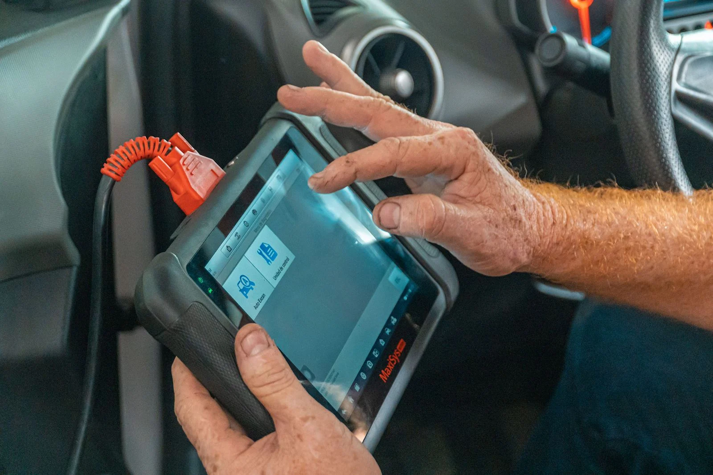

Naš servis

Naš servis pruža sveobuhvatnu brigu za vaš automobil, osiguravajući da svaki aspekt vašeg vozila bude u najboljem mogućem stanju. Naš tim stručnjaka koristi najnoviju tehnologiju i opremu kako bi dijagnosticirao i popravio sve vrste problema. Bilo da se radi o redovnom održavanju ili složenijim popravcima, naš cilj je pružiti vrhunsku uslugu koja osigurava sigurnost i zadovoljstvo naših klijenata.
Karakteristike
01
Stručnost
Naši mehaničari su visoko obučeni i certificirani, te imaju bogato iskustvo u radu s raznim markama i modelima automobila.
02
Moderna oprema
Koristimo najsuvremenije alate i tehnologiju za dijagnostiku i popravak automobila.
03
Kvalitet dijelova
Koristimo samo visokokvalitetne originalne ili OEM dijelove, osiguravajući dugotrajnost i pouzdanost popravaka.
04
Pristupačne cijene
Pružamo vrhunske usluge po konkurentnim cijenama, nudeći transparentnost i fer cijene za sve naše klijente.
Zamjena ulja
Redovna promjena ulja je ključna za dugovječnost i učinkovitost motora. Zamjena starog ulja novim pomaže u održavanju optimalnog podmazivanja i smanjuje trenje među pokretnim dijelovima. To smanjuje habanje, sprječava pregrijavanje i osigurava glatko funkcioniranje motora. Pravilno održavano ulje također poboljšava potrošnju goriva i smanjuje emisije.
Karakteristike
01
Kvalitetno ulje
Kvalitetno motorno ulje osigurava bolje podmazivanje i zaštitu motora, smanjujući habanje i produžujući vijek trajanja motora.
02
Filter ulja
Redovna zamjena filtra ulja osigurava da u motor ulazi samo čisto ulje, sprječavajući oštećenja uzrokovana nečistoćama.
03
Redovni intervali
Preporučuje se zamjena ulja svakih 5000-10000 km ili prema specifikacijama proizvođača, ovisno o uvjetima vožnje.
04
Ekološka zbrinjavanja
Pravilno zbrinjavanje starog ulja smanjuje negativan utjecaj na okoliš, jer se otpadno ulje može reciklirati i ponovno koristiti.
Servis kočnica

Zamjena kočionih pločica ključna je za sigurnost na cesti. Istrošene ili oštećene kočione pločice smanjuju učinkovitost kočenja, što može dovesti do duljeg zaustavnog puta i povećanja rizika od nezgoda. Redovita provjera i zamjena kočionih pločica osigurava optimalno kočenje i sigurnost putnika.
Karakteristike
01
Materijal pločica
Kočione pločice izrađene od visokokvalitetnih materijala pružaju dugotrajnu učinkovitost i otpornost na visoke temperature.
02
Debljina pločica
Redovita provjera debljine kočionih pločica sprječava oštećenje kočionih diskova i osigurava sigurnu vožnju.
03
Ugradnja
Profesionalna ugradnja kočionih pločica osigurava ispravno funkcioniranje kočionog sustava bez vibracija i buke.
04
Garancija
Većina servisa nudi garanciju na zamjenu kočionih pločica, što povećava povjerenje u kvalitetu usluge i trajnost dijelova.
Balansiranje točkova
Balansiranje kotača neophodno je za osiguravanje ravnomjerne raspodjele težine na svim gumama. To smanjuje vibracije, poboljšava udobnost vožnje i produžava vijek trajanja guma. Neuravnoteženi kotači mogu uzrokovati brže trošenje guma, probleme s upravljanjem i povećanu potrošnju goriva.
Karakteristike
01
Težinski utezi
Postavljanje težinskih utega na kotače osigurava ravnotežu, smanjujući vibracije i osiguravajući glatku vožnju.
02
Specijalizirani uređaji
Korištenje preciznih balansirajućih uređaja omogućuje točno balansiranje kotača, čime se smanjuje trošenje i habanje.
03
Vibracije
Smanjenje vibracija prilikom vožnje doprinosi udobnosti i sigurnosti, smanjujući stres na ovjesu i upravljačkom sustavu.
04
Trošenje guma
Ravnomjerno trošenje guma produžava njihov vijek trajanja, smanjuje troškove zamjene i poboljšava sigurnost na cesti.
Servis ovjesa
Servis ovjesa uključuje pregled, popravak ili zamjenu dijelova ovjesa kako bi se osigurala optimalna upravljivost i stabilnost vozila. Problemi s ovjesom mogu uzrokovati nepravilan kontakt guma s cestom, što može dovesti do nesigurne vožnje i nepravilnog trošenja guma. Redoviti servis ovjesa osigurava glatku i sigurnu vožnju.
Karakteristike
01
Amortizeri
Amortizeri apsorbiraju udarce i osiguravaju udobnu vožnju. Istrošeni amortizeri mogu uzrokovati nesigurnu vožnju i oštećenja na ovjesu.
02
Vilice i zglobovi
Ovi dijelovi omogućuju pravilno upravljanje i stabilnost vozila. Njihovo redovito održavanje sprječava oštećenja i produžuje vijek trajanja ovjesa.
03
Ležajevi točkova
Ležajevi smanjuju trenje između dijelova ovjesa. Istrošeni ležajevi mogu uzrokovati buku i vibracije, te smanjiti upravljivost vozila.
04
Poravnanje točkova
Ispravno poravnanje kotača osigurava ravnomjerno trošenje guma i poboljšava upravljivost vozila, smanjujući troškove održavanja.
Tune-Ups
Tune-ups ili tuning automobila odnosi se na prilagodbe i modifikacije motora i drugih sustava radi poboljšanja performansi. Stage 1 uključuje osnovne prilagodbe poput zamjene filtera zraka i ispušnih sustava. Stage 2 uključuje naprednije modifikacije poput remapiranja ECU-a, dok Stage 3 obuhvaća opsežne preinake motora i sustava za gorivo.
Karakteristike
01
Stage 1
Uključuje jednostavne promjene poput zamjene usisnog i ispušnog sustava, koje poboljšavaju protok zraka i snagu motora.
02
Stage 2
Podrazumijeva remapiranje ECU-a i dodavanje turbopunjača ili intercoolera za značajno povećanje snage i momenta motora.
03
Stage 3
Obuhvaća opsežne modifikacije poput ugradnje novih klipova, radilica, i turbo sustava, koje omogućuju maksimalne performanse vozila.
04
Dinamometrijsko testiranje
Nakon tuninga, vozilo se testira na dinamometru kako bi se osiguralo da sve modifikacije funkcioniraju ispravno i daju željene rezultate.
Zamjena zupčastog remena
Zamjena zupčastog remena ključno je održavanje koje sprečava ozbiljne kvarove motora. Ako se zupčasti remen pokida, može doći do velikih oštećenja motora koja zahtijevaju skupe popravke. Redovna zamjena remena osigurava glatko i sigurno funkcioniranje motora.
Karakteristike
01
Visoka čvrstoča
Zupčasti remeni izrađeni od kvalitetnih materijala traju dulje i smanjuju rizik od pucanja.
02
Redovni intervali
Preporučuje se zamjena svakih 60,000 - 100,000 km, ovisno o preporukama proizvođača vozila.
03
Precizna ugradnja
Pravilna ugradnja remena ključna je za ispravan rad motora i sprječavanje proklizavanja.
04
Garancija
Mnogi servisi nude garanciju na zamjenu zupčastog remena, što pruža dodatnu sigurnost vlasnicima vozila.
Zamjena svječica
Zamjena svjećica poboljšava rad motora i osigurava učinkovito sagorijevanje goriva. Svjećice koje ne rade ispravno mogu uzrokovati probleme s paljenjem, smanjenje performansi motora i povećanu potrošnju goriva. Redovna zamjena svjećica osigurava optimalne performanse i ekonomičnost.
Karakteristike
01
Vrsta svječica
Iridij i platina svjećice nude duži vijek trajanja i bolje performanse u usporedbi s običnim svjećicama.
02
Redovna zamjena
Preporučuje se zamjena svakih 30,000 - 100,000 km, ovisno o vrsti svjećica i uvjetima vožnje.
03
Učinkovitost
Nova svjećica poboljšava paljenje i ukupnu učinkovitost motora, smanjujući emisije i potrošnju goriva.
04
Izgaranje
Osigurava čistije sagorijevanje goriva, što doprinosi boljoj zaštiti motora i smanjenju štetnih emisija.
Servis elektrike
Servis elektrike obuhvaća dijagnostiku i popravak svih električnih sustava u vozilu, uključujući svjetla, alternatore, startere i električne instalacije. Problemi s električnim sustavom mogu utjecati na sigurnost i performanse vozila, te ih je važno redovito održavati kako bi se osigurala pouzdanost i ispravno funkcioniranje.
Karakteristike
01
Dijagnostika
Korištenje specijaliziranih alata za dijagnosticiranje problema u električnom sustavu omogućuje brzo i precizno identificiranje i rješavanje kvarova.
02
Instalacije
Popravak ili zamjena oštećenih električnih instalacija osigurava siguran i pouzdan rad svih električnih komponenti.
03
Alternatori i starteri
Servis ili zamjena alternatora i startera osigurava ispravno punjenje akumulatora i pouzdano pokretanje motora.
04
Električni sistemi
Održavanje i popravak elektroničkih sustava, uključujući kontrolne module i senzore, osigurava optimalnu funkcionalnost i sigurnost vozila.
Servis mjenjača

Servis mjenjača uključuje dijagnostiku, održavanje i popravak ručnih i automatskih mjenjača. Pravilno održavanje mjenjača osigurava glatko mijenjanje brzina, sprječava pregrijavanje i produžuje vijek trajanja mjenjača. Problemi s mjenjačem mogu značajno utjecati na performanse i sigurnost vozila.
Karakteristike
01
Dijagnostika
Korištenje naprednih dijagnostičkih alata omogućuje precizno otkrivanje problema u mjenjaču, kao što su curenje ulja ili kvarovi u elektronici.
02
Zamjena ulja
Redovna zamjena ulja u mjenjaču poboljšava podmazivanje, smanjuje habanje i osigurava glatko mijenjanje brzina.
03
Popravak komponenti
Popravak ili zamjena oštećenih komponenti mjenjača, uključujući zupčanike i spojke, osigurava dugotrajnost i pouzdanost mjenjača.
04
Kalibracija
Kalibracija automatskih mjenjača osigurava ispravno funkcioniranje elektronike i optimalne performanse, smanjujući mogućnost nepravilnog mijenjanja brzina.
Servis klima uređaja
Servis klima uređaja osigurava da vaš sustav za hlađenje radi optimalno. Redoviti servis uključuje punjenje rashladnog sredstva, čišćenje i dezinfekciju sustava te provjeru svih komponenti. Ispravan klima uređaj ne samo da povećava udobnost tijekom vožnje, već i sprječava neugodne mirise i alergijske reakcije.
Karakteristike
01
Punjene rashladnog sredstva
Osigurava optimalnu učinkovitost klima uređaja i ugodnu temperaturu unutar vozila.
02
Dezinfekcija
Uklanja bakterije, gljivice i neugodne mirise iz klima sustava, osiguravajući svjež i čist zrak.
03
Provjera curenja
Redovna provjera i popravak curenja rashladnog sredstva sprječava gubitak učinkovitosti klima uređaja.
04
Filter kabine
Zamjena filtera kabine poboljšava kvalitetu zraka u vozilu i smanjuje mogućnost alergijskih reakcija.